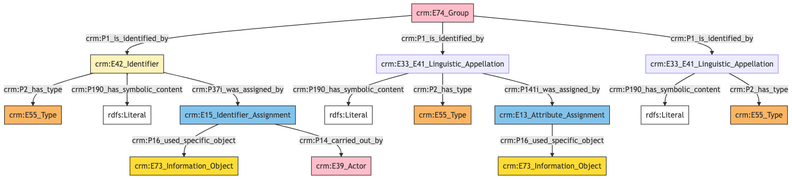
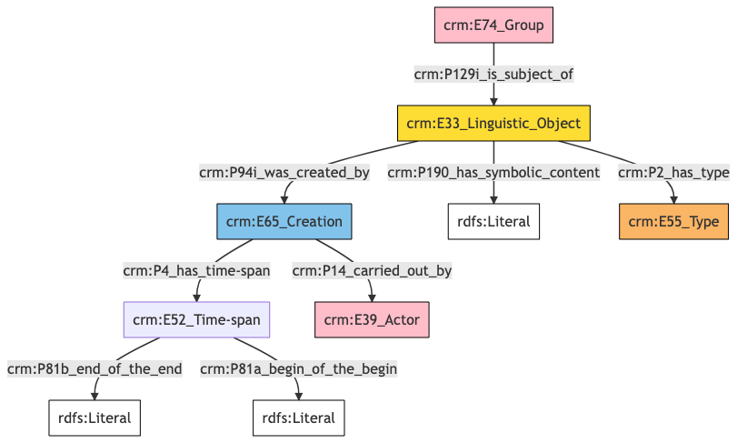
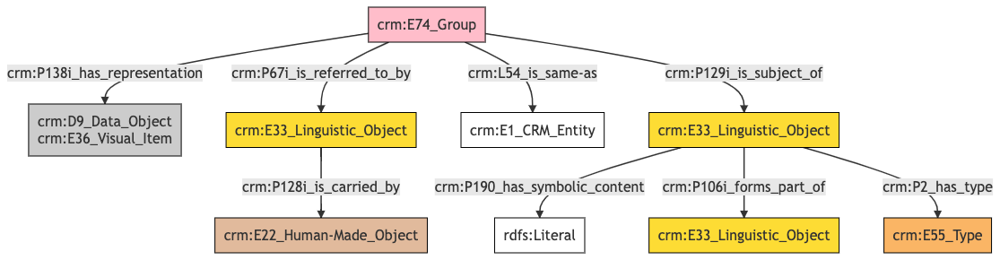

Group
Author: Denitsa Nenova, George Bruseker
Version: 1.0
The Group reference data model provides a list of standard descriptors (fields) that are typically present in the description of a Group or institution in cultural heritage data systems. The intention of this reference model is to provide a consolidated, high-level formal structure comprising the most commonly reused descriptors for a Group.
| Name | URI | |
|---|---|---|
| Root Ontology Node | E74 Group | https://cidoc-crm.org/Entity/E74-Group/version-7.1.1 |
| Type Differentiator | N/A | N/A |
The Group model allows the documentation of the following kinds of information:
| Information Category | Information Collections | Description |
|---|---|---|
| Names and Classifications | Names/Alternative Names/Identifiers/Type | The researcher can document various names and classification regarding the Group. |
| Existence | Birth/Death | The researcher can document the events related to the birth and death of the Group. |
| Description | Description | The researcher can document various free-text descriptions of the Group. |
| Documentation | Citation |
Group Names and Classifications
The attribution of names and types to things, including Groups, is a basic human activity. The disambiguation of Group is aided by the understanding of the various names and identifiers that have been given to a Group at different moments in time. Moreover, classifications such as Group type and legal status can help in identifying and studying Groups over time.
| Filed ID | Name | Description | Data Type | CRM Path |
|---|---|---|---|---|
| fie_1 | Group Identifier | This field is used to record an identifier attributed to the documented Group. | String | --> P1 --> E42[1_1] --> P190 --> rdfs:Literal |
| fie_2 | Group Identifier Type | This field is used to record the type of the identifier attributed to the documented Group. | Concept | --> P1 --> E42[1_1] --> P2 --> E55[2_1] |
| fie_3 | Group Identifier Provider | This field is used to record the institution, group or individual responsible for providing the documented Group's identifier. | Reference Model [Person/Group] | --> P1 --> E42[1_1] --> P37i --> E15[3_1] --> P14 --> E39[3_2] |
| fie_4 | Group Identifier Source | This field is used to record the source based on which the identifier was attributed to the documented Group. | Reference Model [Bibliographic Entity/Image] | --> P1 --> E42[1_1] --> P37i --> E15[3_1] --> P16 --> E73[4_1] |
| fie_5 | Group Name | This field is used to record the main name attributed to the documented Group. | String | --> P1 --> E33_E41[5_1] --> P190 --> rdfs:Literal --> P1 --> E33_E41[5_1] --> P2 --> E55[5_2]{'preferred terms'} |
| fie_10 | Group Alias | This field is used to record an alternative name under which the documented Group is known. | String | --> P1 --> E33_E41[10_1] --> P190 --> rdfs:Literal |
| fie_11 | Group Alias Type | This field is used to record the type of the alternative name that has been attributed to the documented Group. | Concept | --> P1 --> E33_E41[10_1] --> P2 --> E55[11_1] |
| fie_16 | Group Alias Source | This field is used to record the source on the basis of which the organization attributing the alternative name use based their attribution. | Reference Model [Bibliographic Entity/Image] | --> P1 --> E33_E41[10_1] --> P141i --> E13[15_1] --> P16 --> E73[16_1] |
- Group Names and Classifications Ontology Graph

- Group Names and Classifications RDF
@prefix crm: <http://www.cidoc-crm.org/cidoc-crm/> .
@prefix rdfs: <http://www.w3.org/2000/01/rdf-schema#> .
<https://census.de/example/actor/E74> a crm:E74_Group ;
crm:P1_is_identified_by <https://example.org/name/fie_10_1>,
<https://example.org/name/fie_1_1>,
<https://example.org/name/fie_5_1> .
<http://vocab.getty.edu/aat/300404670> a crm:E55_Type ;
rdfs:label "preferred terms" .
<https://example.org/actor/fie_3_2> a crm:E39_Actor .
<https://example.org/conceptual_object/fie_16_1> a crm:E73_Information_Object .
<https://example.org/conceptual_object/fie_4_1> a crm:E73_Information_Object .
<https://example.org/event/fie_15_1> a crm:E13_Attribute_Assignment ;
crm:P16_used_specific_object <https://example.org/conceptual_object/fie_16_1> .
<https://example.org/event/fie_3_1> a crm:E15_Identifier_Assignment ;
crm:P14_carried_out_by <https://example.org/actor/fie_3_2> ;
crm:P16_used_specific_object <https://example.org/conceptual_object/fie_4_1> .
<https://example.org/name/fie_10_1> a crm:E33_E41_Linguistic_Appellation ;
crm:P141i_was_assigned_by <https://example.org/event/fie_15_1> ;
crm:P190_has_symbolic_content "content" ;
crm:P2_has_type <https://example.org/type/fie_11_1> .
<https://example.org/name/fie_1_1> a crm:E42_Identifier ;
crm:P190_has_symbolic_content "content" ;
crm:P2_has_type <https://example.org/type/fie_2_1> ;
crm:P37i_was_assigned_by <https://example.org/event/fie_3_1> .
<https://example.org/name/fie_5_1> a crm:E33_E41_Linguistic_Appellation ;
crm:P190_has_symbolic_content "content" ;
crm:P2_has_type <http://vocab.getty.edu/aat/300404670> .
<https://example.org/type/fie_11_1> a crm:E55_Type .
<https://example.org/type/fie_2_1> a crm:E55_Type .
- Group Names and Classifications JSON-LD
{
"@context": "https://linked.art/ns/v1/linked-art.json",
"@graph": [
{
"classified_as": [
"https://example.org/type/fie_2_1"
],
"content": "content",
"id": "https://example.org/name/fie_1_1",
"identifier_assigned_by": [
"https://example.org/event/fie_3_1"
],
"type": "Identifier"
},
{
"id": "https://example.org/conceptual_object/fie_16_1",
"type": "InformationObject"
},
{
"classified_as": [
"http://vocab.getty.edu/aat/300404670"
],
"content": "content",
"id": "https://example.org/name/fie_5_1",
"type": "Name"
},
{
"id": "https://example.org/conceptual_object/fie_4_1",
"type": "InformationObject"
},
{
"id": "https://example.org/type/fie_2_1",
"type": "Type"
},
{
"id": "https://example.org/type/fie_11_1",
"type": "Type"
},
{
"_label": "preferred terms",
"id": "http://vocab.getty.edu/aat/300404670",
"type": "Type"
},
{
"assigned_by": [
"https://example.org/event/fie_15_1"
],
"classified_as": [
"https://example.org/type/fie_11_1"
],
"content": "content",
"id": "https://example.org/name/fie_10_1",
"type": "Name"
},
{
"id": "https://census.de/example/actor/E74",
"identified_by": [
"https://example.org/name/fie_10_1",
"https://example.org/name/fie_1_1",
"https://example.org/name/fie_5_1"
],
"type": "Group"
},
{
"id": "https://example.org/event/fie_15_1",
"type": "AttributeAssignment",
"used_specific_object": [
"https://example.org/conceptual_object/fie_16_1"
]
},
{
"id": "https://example.org/actor/fie_3_2",
"type": "Actor"
},
{
"carried_out_by": [
"https://example.org/actor/fie_3_2"
],
"id": "https://example.org/event/fie_3_1",
"type": "IdentifierAssignment",
"used_specific_object": [
"https://example.org/conceptual_object/fie_4_1"
]
}
]
}
Group Existence
Of essential importance in identifying and tracking Groups is to know when they came into existence and if they have gone out of existence. For this reason, we have clustered descriptors relevant to such information into a common ‘existence’ category. These are described in the table below.
| Filed ID | Name | Description | Data Type | CRM Path |
|---|---|---|---|---|
| fie_79 | Group Earliest Formation Date | This field is used to record the earliest possible date for the formation of the documented Group or institution. | Date | --> P95i --> E66[79_1] --> P4 --> E52[79_2] --> P82a --> xsd:dateTime |
| fie_80 | Group Latest Formation Date | This field is used to record the latest possible date for the formation of the documented Group or institution. | Date | --> P95i --> E66[79_1] --> P4 --> E52[79_2] --> P82b --> xsd:dateTime |
| fie_81 | Group Formation Location | This field is used to record the place of formation of the documented Group or institution. | Reference Model [Location] | --> P95i --> E66[79_1] --> P7 --> E53[81_1] |
| fie_83 | Group Earliest Dissolution Date | This field is used to record the earliest possible date for the dissolution of the documented Group or institution. | Date | --> P99i --> E68[83_1] --> P4 --> E52[83_2] --> P82a --> xsd:dateTime |
| fie_84 | Group Latest Dissolution Date | This field is used to record the latest possible date for the dissolution of the documented Group or institution. | Date | --> P99i --> E68[83_1] --> P4 --> E52[83_2] --> P82b --> xsd:dateTime |
| fie_85 | Group Dissolution Location | This field is used to record the place at which the dissolution of the documented Group occurred. | Reference Model [Location] | --> P99i --> E68[83_1] --> P7 --> E53[85_1] |
- Group Existence Ontology Graph

- Group Existence RDF
@prefix crm: <http://www.cidoc-crm.org/cidoc-crm/> .
@prefix xsd: <http://www.w3.org/2001/XMLSchema#> .
<https://census.de/example/actor/E74> a crm:E74_Group ;
crm:P95i_was_formed_by <https://example.org/event/fie_79_1> ;
crm:P99i_was_dissolved_by <https://example.org/event/fie_83_1> .
<https://example.org/event/fie_79_1> a crm:E66_Formation ;
crm:P4_has_time-span <https://example.org/time_span/fie_79_2> ;
crm:P7_took_place_at <https://example.org/place/fie_81_1> .
<https://example.org/event/fie_83_1> a crm:E68_Dissolution ;
crm:P4_has_time-span <https://example.org/time_span/fie_83_2> ;
crm:P7_took_place_at <https://example.org/place/fie_85_1> .
<https://example.org/place/fie_81_1> a crm:E53_Place .
<https://example.org/place/fie_85_1> a crm:E53_Place .
<https://example.org/time_span/fie_79_2> a crm:E52_Time-Span ;
crm:P82a_begin_of_the_begin ""^^xsd:dateTime ;
crm:P82b_end_of_the_end ""^^xsd:dateTime .
<https://example.org/time_span/fie_83_2> a crm:E52_Time-Span ;
crm:P82a_begin_of_the_begin ""^^xsd:dateTime ;
crm:P82b_end_of_the_end ""^^xsd:dateTime .
- Group Social Relations JSON-LD
{
"@context": "https://linked.art/ns/v1/linked-art.json",
"@graph": [
{
"begin_of_the_begin": "",
"end_of_the_end": "",
"id": "https://example.org/time_span/fie_83_2",
"type": "TimeSpan"
},
{
"id": "https://example.org/place/fie_81_1",
"type": "Place"
},
{
"id": "https://example.org/place/fie_85_1",
"type": "Place"
},
{
"id": "https://example.org/event/fie_83_1",
"timespan": "https://example.org/time_span/fie_83_2",
"took_place_at": [
"https://example.org/place/fie_85_1"
],
"type": "Dissolution"
},
{
"dissolved_by": "https://example.org/event/fie_83_1",
"formed_by": "https://example.org/event/fie_79_1",
"id": "https://census.de/example/actor/E74",
"type": "Group"
},
{
"id": "https://example.org/event/fie_79_1",
"timespan": "https://example.org/time_span/fie_79_2",
"took_place_at": [
"https://example.org/place/fie_81_1"
],
"type": "Formation"
},
{
"begin_of_the_begin": "",
"end_of_the_end": "",
"id": "https://example.org/time_span/fie_79_2",
"type": "TimeSpan"
}
]
}
Group Description
This category brings together the diverse field which describe the documented Group. It is meant to cover information concerning the type, language content of the description as well as temporal information about the description itself.
| Filed ID | Name | Description | Data Type | CRM Path |
|---|---|---|---|---|
| fie_188 | Group Description | This field is used to record a description in free text of the documented Group. | String | --> P129i --> E33[188_1] --> P190 --> rdfs:Literal |
| fie_190 | Group Description Type | This field is used to record the type of description given of the documented Group. | Concept | --> P129i --> E33[188_1] --> P2 --> E55[190_1] |
| fie_191 | Group Description Author | This field is used to record the author of the description given of the documented Group. | Reference Model [Person/Group] | --> P129i --> E33[188_1] --> P94i --> E65[191_1]>-P14 --> E39[191_2] |
| fie_192 | Group Description Earliest Date | This field is used to record the earliest possible date for the creation of the description of the documented Group. | Date | --> P129i --> E33[188_1] --> P94i --> E65[191_1] --> P4 --> E52[191_2] --> P82a --> xsd:dateTime |
| fie_193 | Group Description Latest Date | This field is used to record the latest possible date for the creation of the description of the documented Group. | Date | --> P129i --> E33[188_1] --> P94i --> E65[191_1] --> P4 --> E52[191_2] --> P82b —> xsd:dateTime |
- Group Description Ontology Graph

- Group Description RDF
@prefix crm: <http://www.cidoc-crm.org/cidoc-crm/> .
<https://census.de/example/actor/E74> a crm:E74_Group ;
crm:P129i_is_subject_of <https://example.org/conceptual_object/fie_188_1> .
<https://example.org/actor/fie_191_2> a crm:E39_Actor .
<https://example.org/conceptual_object/fie_188_1> a crm:E33_Linguistic_Object ;
crm:P190_has_symbolic_content "content" ;
crm:P2_has_type <https://example.org/type/fie_190_1> ;
crm:P94i_was_created_by <https://example.org/event/fie_191_1> .
<https://example.org/event/fie_191_1> a crm:E65_Creation ;
crm:P14_carried_out_by <https://example.org/actor/fie_191_2> ;
crm:P4_has_time-span <https://example.org/time_span/fie_192_1> .
<https://example.org/time_span/fie_192_1> a crm:E52_Time-span ;
crm:P81a_begin_of_the_begin "content" ;
crm:P81b_end_of_the_end "content" .
<https://example.org/type/fie_190_1> a crm:E55_Type .
- Group Description JSON-LD
{
"@context": "https://linked.art/ns/v1/linked-art.json",
"@graph": [
{
"carried_out_by": [
"https://example.org/actor/fie_191_2"
],
"id": "https://example.org/event/fie_191_1",
"timespan": "https://example.org/time_span/fie_192_1",
"type": "Creation"
},
{
"id": "https://example.org/actor/fie_191_2",
"type": "Actor"
},
{
"id": "https://example.org/type/fie_190_1",
"type": "Type"
},
{
"classified_as": [
"https://example.org/type/fie_190_1"
],
"content": "content",
"created_by": "https://example.org/event/fie_191_1",
"id": "https://example.org/conceptual_object/fie_188_1",
"type": "LinguisticObject"
},
{
"id": "https://census.de/example/actor/E74",
"subject_of": [
"https://example.org/conceptual_object/fie_188_1"
],
"type": "Group"
},
{
"crm:P81a_begin_of_the_begin": "content",
"crm:P81b_end_of_the_end": "content",
"id": "https://example.org/time_span/fie_192_1",
"type": "crm:E52_Time-span"
}
]
}
Group Documentation
This information category unites referential information about the documented Group.
| Filed ID | Name | Description | Data Type | CRM Path |
|---|---|---|---|---|
| fie_204 | Group Description External URL | The field is used to record the sameness between the Group described and an external authority. | uri | --> L54 --> E1[204_1] |
| fie_195 | Group Image | This field is used to record a digital image which is representative of the documented Group. | Reference Model [Image] | --> P138i --> E36/D9[195_1] |
| fie_196 | Group Citation | This field is used to record a citation to reference documentation for the documented Group. | String | --> P129i --> E33[196_1] --> rdf:value --> rdfs:Literal --> P129i --> E33[196_1] --> P2 --> E55 "Citation" |
| fie_197 | Group Citation Source | This field is used to record the source used for generating the citation for the documented Group. | Reference Model [Bibliographic Entity] | --> P129i --> E33[196_1] --> P106i --> E33[197_1] |
| fie_cen_24 | Group Document Reference | This field is used to relate a document carrying a textual reference about the documented group and the documented Group itself. | Reference Model | [Document] |
- Group Documentation Ontology Graph

- Group Documentation RDF
@prefix crm: <http://www.cidoc-crm.org/cidoc-crm/> .
@prefix rdfs: <http://www.w3.org/2000/01/rdf-schema#> .
<https://census.de/example/actor/E74> a crm:E74_Group ;
crm:L54_is_same-as <https://example.org/entity/fie_204_1> ;
crm:P129i_is_subject_of <https://example.org/conceptual_object/fie_196_1> ;
crm:P138i_has_representation <https://example.org/conceptual_object/fie_195_1> ;
crm:P67i_is_referred_to_by <https://example.org/conceptual_object/C24_1> .
<https://example.org/conceptual_object/C24_1> a crm:E33_Linguistic_Object ;
crm:P128i_is_carried_by <https://example.org/physical_object/C24_2> .
<https://example.org/conceptual_object/fie_195_1> a crm:D9_Data_Object,
crm:E36_Visual_Item .
<https://example.org/conceptual_object/fie_196_1> a crm:E33_Linguistic_Object ;
crm:P106i_forms_part_of <https://example.org/conceptual_object/fie_197_1> ;
crm:P190_has_symbolic_content "content" ;
crm:P2_has_type <https://example.org/type/fie_196_1> .
<https://example.org/conceptual_object/fie_197_1> a crm:E33_Linguistic_Object .
<https://example.org/entity/fie_204_1> a crm:E1_CRM_Entity .
<https://example.org/physical_object/C24_2> a crm:E22_Human-Made_Object .
<https://example.org/type/fie_196_1> a crm:E55_Type ;
rdfs:label "Citation" .
- Group Documentation JSON-LD
{
"@context": "https://linked.art/ns/v1/linked-art.json",
"@graph": [
{
"id": "https://example.org/conceptual_object/fie_197_1",
"type": "LinguisticObject"
},
{
"id": "https://example.org/conceptual_object/fie_195_1",
"type": [
"VisualItem",
"crm:D9_Data_Object"
]
},
{
"_label": "Citation",
"id": "https://example.org/type/fie_196_1",
"type": "Type"
},
{
"carried_by": [
"https://example.org/physical_object/C24_2"
],
"id": "https://example.org/conceptual_object/C24_1",
"type": "LinguisticObject"
},
{
"id": "https://example.org/physical_object/C24_2",
"type": "HumanMadeObject"
},
{
"id": "https://example.org/entity/fie_204_1",
"type": "CRMEntity"
},
{
"classified_as": [
"https://example.org/type/fie_196_1"
],
"content": "content",
"crm:P106i_forms_part_of": {
"id": "https://example.org/conceptual_object/fie_197_1"
},
"id": "https://example.org/conceptual_object/fie_196_1",
"type": "LinguisticObject"
},
{
"crm:L54_is_same-as": {
"id": "https://example.org/entity/fie_204_1"
},
"id": "https://census.de/example/actor/E74",
"referred_to_by": [
"https://example.org/conceptual_object/C24_1"
],
"representation": [
"https://example.org/conceptual_object/fie_195_1"
],
"subject_of": [
"https://example.org/conceptual_object/fie_196_1"
],
"type": "Group"
}
]
}